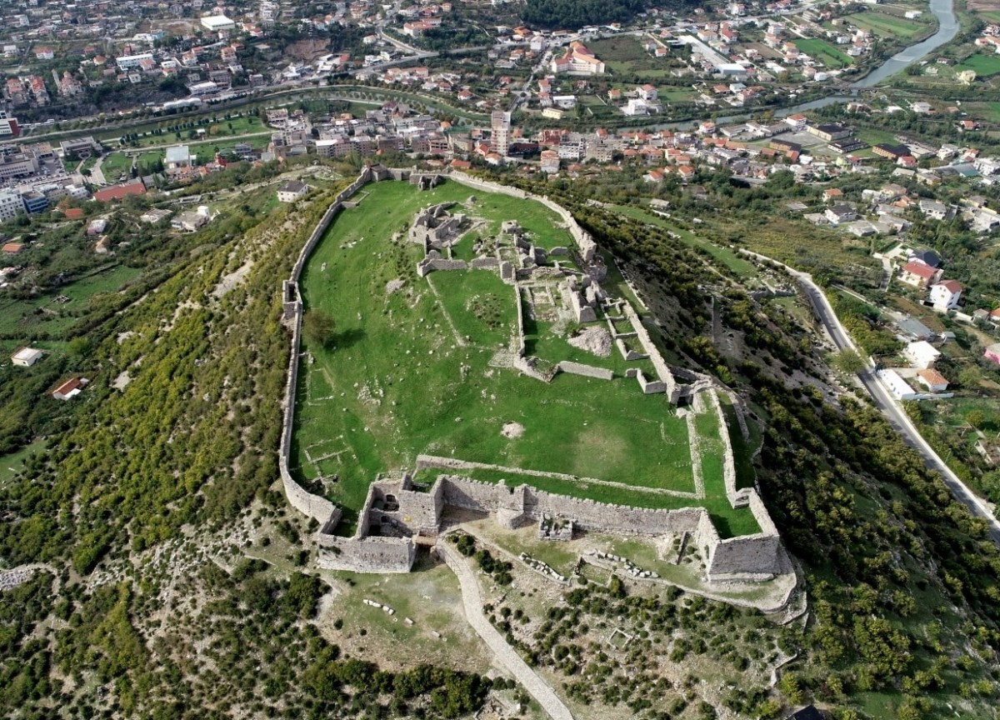
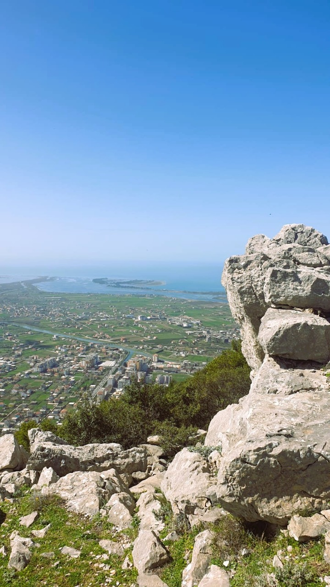
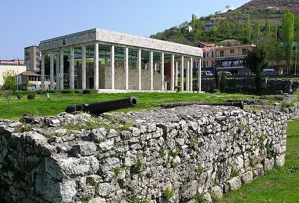
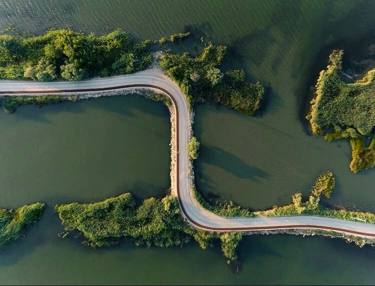

TRASHËGIMI HISTORIKE
Kalaja e Lezhës
Një pikë vështrimi mbi qytetin dhe peizazhin përreth. Muret dhe strukturat e saj dëshmojnë periudha të ndryshme të historisë së Lezhës.
Zbulo vendinNjih historinë e qytetit përmes pikave të tij më të rëndësishme dhe peizazheve që e rrethojnë.

Një pikë vështrimi mbi qytetin dhe peizazhin përreth. Muret dhe strukturat e saj dëshmojnë periudha të ndryshme të historisë së Lezhës.
Zbulo vendin
Fortifikimi i hershëm në lartësinë e Malit të Shëlbuemit, i lidhur me peizazhin arkeologjik të Lissusit.
Zbulo vendin
Një vend kujtese në zemër të qytetit, i lidhur me historinë e Gjergj Kastriotit dhe Lezhës.
Zbulo vendin
Një peizazh ligatinor pranë detit, i njohur për habitatet dhe vëzhgimin e shpendëve.
Zbulo vendin